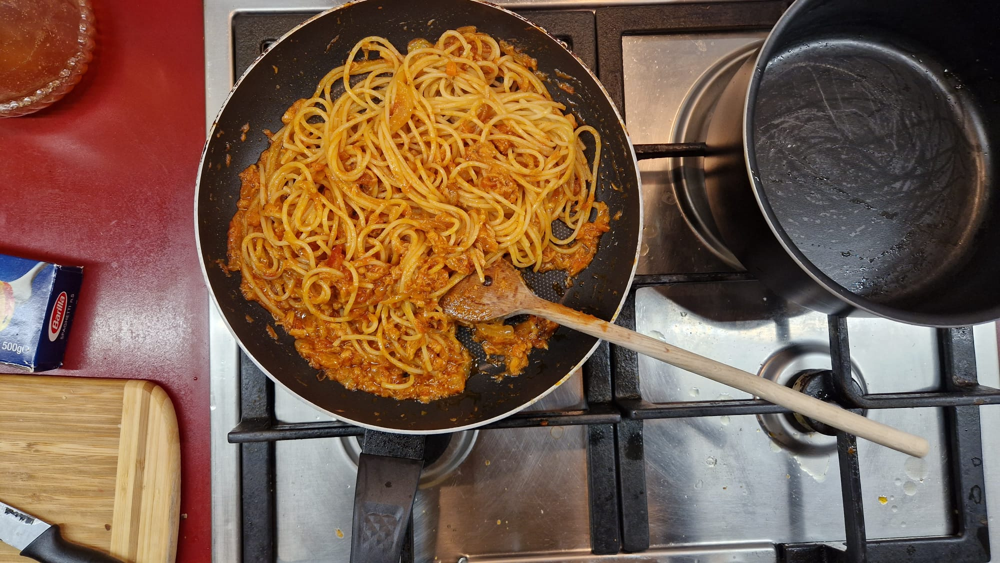
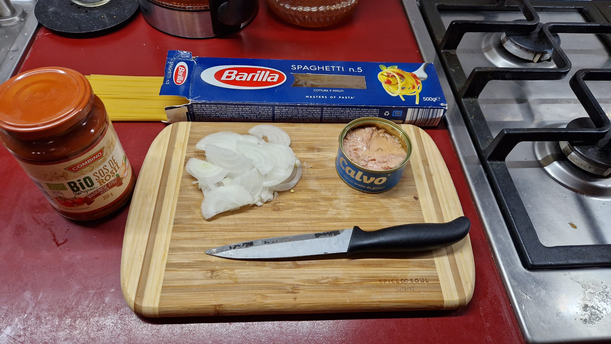
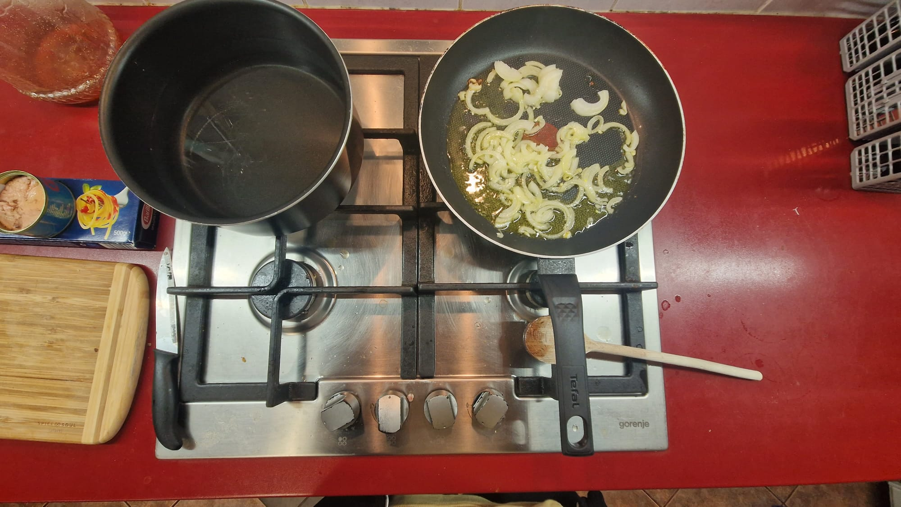
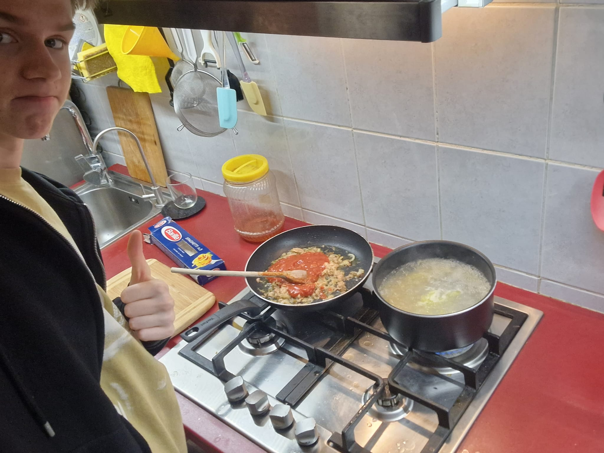
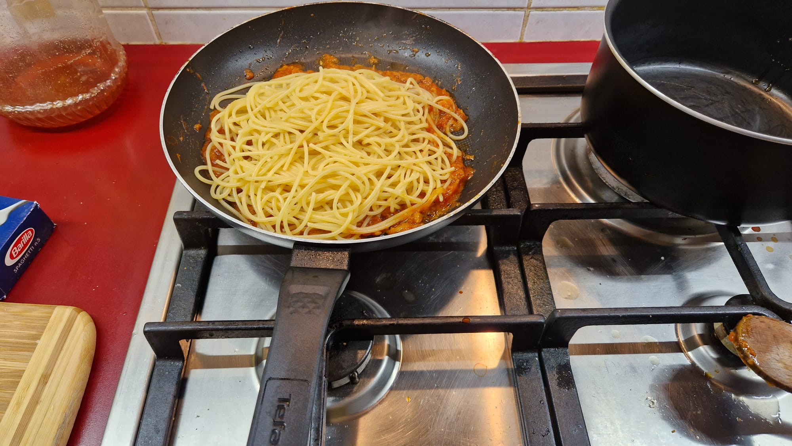
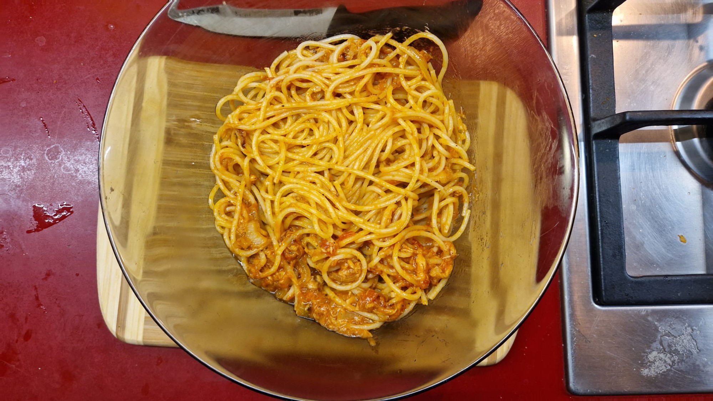
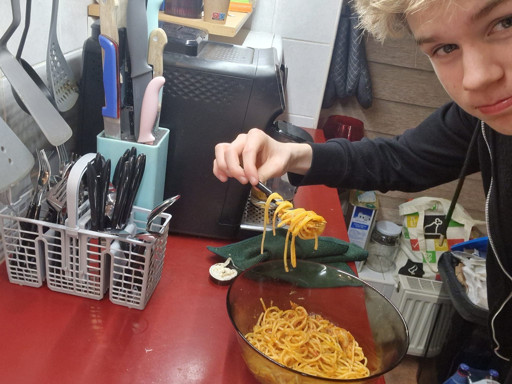

How to make Tuna Pasta
Have you ever wanted to try an authentic recipe that mixes up your palette of flavors and food? Then I have just the right thing for you. Pasta with tuna is an easy recipe to cook, anyone can do it!

Here are ingredients:
- 3 cans of tuna;
- 400g of tamoato sauce;
- 1 onion;
- Olive oil;
- pasta / spaghetti;

Instructions:
- Cut the onion into tiny pieces and add them to a pan alongside some olive oil.
- While the onions are frying, fill half a pot with water and boil it.

- When the water starts bubbling, add the pasta / spaghetti. In the pan, add the cans of tuna and the tomato sauce, alongside some salt and pepper, according to your preference.

-Stir in the pan regularly, for 10 minutes. When the pasta/spaghetti finishes boiling, add them in the pan and stir for an additional 3 minutes.

-After that’s done, transfer the pasta with tuna into a bigger plate.

Now it's time to enjoy your meal!
